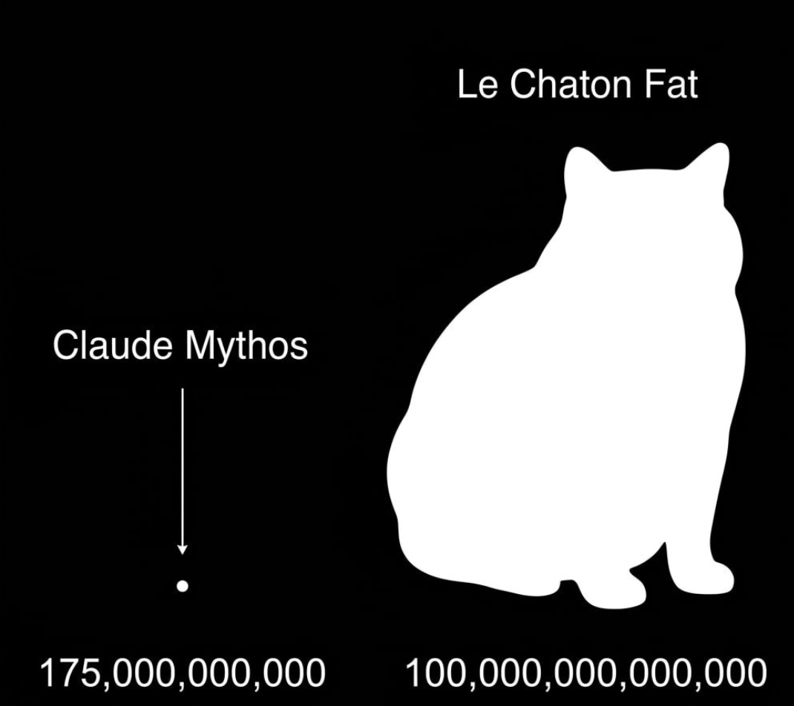
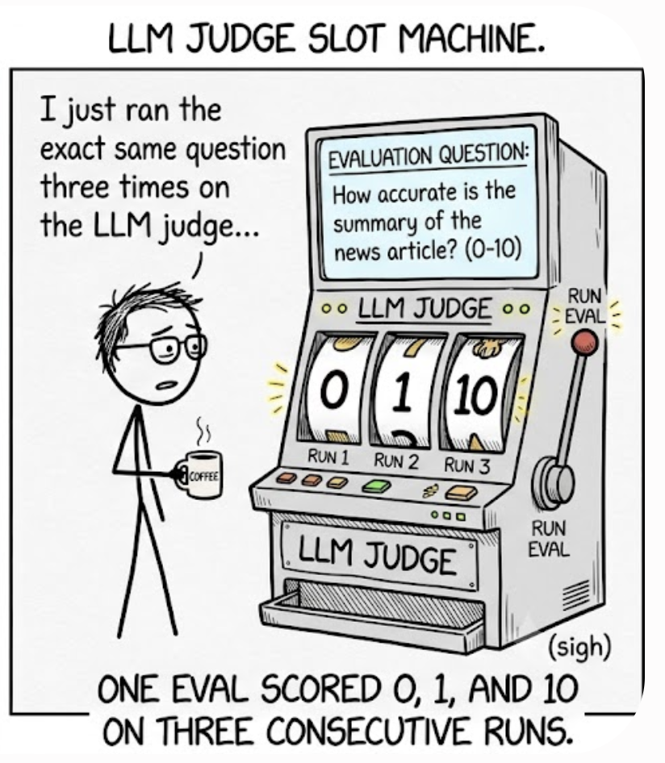

The Source of the Benchmark Is in Your Dashboards
There's a AI button now in our Tableau dashboards - uou click it and DataChat agent answers your question already knowing which dashboard you're looking at, which tab, which filters are selected. Users like it. It also, completely by accident, solved the problem from the previous post: where do you get a benchmark?
For the panel to answer "accordingly," each dashboard needs a skill — and writing one took our BI engineers almost a day of work. To improve that, I proposed generating the skills automatically from the dashboard's source code: create a draft, then iterate on it manually. But to check that a generated skill actually works, you need an eval. And there they were, for free: take each chart, look at the number on it, generate a question about that number, run it with the pre-activated skill — done. Each of those evals had the following parts: dashboard name, tab, chart title, all filters selected - and then the query.
It hit me: remove the dashboard mention and the filter specifics, and you have a pretty good eval, period. That is what MaratBench1 grew from.
Dashboards take time to create and usually survive multiple iterations; many users rely on them to answer their analytical questions. The data is up-to-date and verified by experts. Those are perfect golden answers for evals — the only thing missing is the questions to complete the picture.
Where the questions come from
As it turned out, our business is not that unique. It has all the same dashboards that track revenue, conversions, funnels, sales, marketing, etc. All of that is already described in hundreds of books and articles, deep inside an LLM's intelligence. So taking a screenshot and asking an LLM to generate a business question works exceptionally well. We had it backwards the whole time: we tried to write questions and then hunt for correct answers, when we could start from the verified answer and let the LLM reconstruct the question.

I quickly collected a list of the most important and popular dashboards, iterated on it with feedback from colleagues, and now we have a source of truth that gives us:
- real business questions
- answers verifiable visually, in seconds
- historical absolute periods gives us reproducible rubrics
- dashboards as the default way to resolve the ambiguity of a question
Anatomy of one eval
We are lucky to have an AI-first data governance team here at Semrush. It had already laid out a very simple, concise, and effective structure for storing knowledge management in a git repo as plain .md files. We just needed a folder for our benchmarks:
/evals
/maratbench1
README.md
revenue-001.yml
revenue-002.yml
signup-funnel-001.yml
...
What should each eval look like? My software development background forces me to keep things as simple as possible. Here is one, whole (the numbers and names are fake, the shape is real):
id: maratbench1-revenue-001
title: Monthly all-unit revenue, June 2026
query: >
What was the total all-unit revenue
from 1 June 2026 to 30 June 2026, in USD?
rubric:
- The answer reports revenue for 1 June 2026 – 30 June 2026
as USD 500M (fake), with 5% tolerance.
- The tool-calling trace contains SQL queries to the table
revenue_dash_2026_v3_certified.
- The answer contains a reference to the revenue dashboard.
references:
- https://tableau.internal/…/revenue-dashboard
A few things carry the weight here. The id is semantic — [bench]-[dashboard]-[serial] — so you can quickly tell a colleague which eval you are talking about. The query uses fixed dates in the past, and deliberately does not overspecify filters and categories: resolving that ambiguity correctly is the agent's job. Try to choose a question whose answer does not change too much retrospectively, and think how a good analyst would answer it. The references point to the dashboards used to verify the rubric, so when the rubric or the query turns out to be wrong, it is easy to fix.
We use an LLM as a judge to evaluate the agent's response, plus its tool-calling trace, against the criteria. If the criteria are clear true/false checks with minimal ambiguity, almost any modern LLM can do the judge's job extremely reliably. That way we keep the rubric modifiable, don't depend on the output format of the LLM, use the tool-calling trace as a measuring factor, and stay as flexible as possible.
Things we tried that didn't work
- Comparing the reference SQL and the agent's SQL semantically. The rubric contained reference SQL that answers the question, and we asked the judge to compare whether the agent's SQL does essentially the same job. It turned out very unreliable: minimal changes in SQL were flagged as dramatic problems, while some SQL syntax nuances that made the answer completely wrong were not picked up at all. One day I just removed all the evals that worked that way, since they didn't bring any value.
- A complex criterion structure. Each criterion had an importance (critical, major, medium, minor), a title, reasoning, a dependency (which criteria this one depends on), and a justification (how to verify it). While it looks good, in practice, for our dashboard-based benchmark, it is just excessive noise that raises more questions than it gives value.
- Deterministic checks. You can check the answer by asking the LLM to reply with JSON in a particular schema and then verifying the numbers with simple scripts. The problem is that it biases the query, it breaks the UI that relies on the output format, and it still has problems, especially with floats and number formatting.
- Complex criteria with a grading system. If a criterion could be partially true, just split it into separate true/false ones. That is much easier to debug and reason about. Calibrating scores (e.g., 1–10 or 0–1) is a problem in itself, so if you can avoid it - do.

For a while I was making decisions from single runs. Then one eval scored 0, 1, and 10 on three consecutive runs of the identical question. Agents are non-deterministic all the way down; three repeats is the minimum that keeps you honest, and even then a one-point difference means nothing.
The pipeline
How we create the evals is straightforward:
Pick a popular, verified, not-a-shiny-new dashboard → Choose appropriate filters → Take wide and tall enough screenshots, save them as evidence → Come up with a good set of questions → Create a YAML → Run each question through the agent 3 times → If the agent answers inconsistently with the rubric, check whether that is an agent problem or your own mistake: a misinterpretation, a too-vague question, or a misreading of the screenshot
I would not recommend creating hundreds of questions per dashboard. Probably 3-10 is enough. The more queries you have, the higher the chance they go stale pretty soon. Keep it to the minimum necessary, but of good quality, so you can trust it.
Do you really need an eval framework?
Before adopting one, think twice. An eval framework stores a second copy of every conversation in its own storage and shows it to you as arrays of JSON while your application already stores the same conversations and already has a UI for them. Reviewing an agent run in something that looks like what the user saw, with tool-call details one click deeper, beats reading raw traces every time: you spot wrong answers and UI bugs in the same pass. So my advice: keep the eval UI as close to the product as possible.
So, how good is our agent?
Take my favorite failure: cancellation requests for one month. The agent confidently reported a number far from the one on the dashboard and claimed cancellations were growing when they were actually declining. A manager acting on that answer would be solving a problem that doesn't exist.
68 questions, 20 domains, every answer verified by hand against a dashboard. Our agent passes 26. That sounds like bad news, it's the best news we'd had all year, because for the first time the failure was measurable.
It took a couple of weeks of iteration to get there. How convenient that OpenAI released the 5.6 family of models and now we can measure how much better our agent will become. Right? As it turned out, the results were not what we expected. And there are some good reasons for that. But that's a story for the next post.